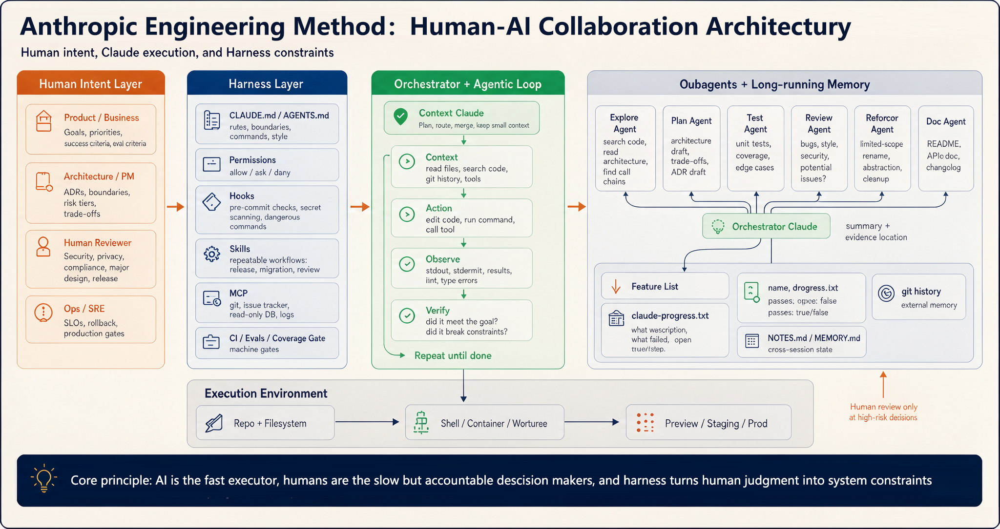

全景
Anthropic Engineering Method · 原图收录自 Claude Code SDLC Cookbook
Anthropic 人与 AI 协作的五层架构：人定意图，驾驭层定边界，AI 在框内自主执行

分工链（左→右）：人 → 约束 → 执行循环 → 分工 → 记忆
环境链（下）：代码库 → 容器 → 预发 / 生产
红字：人只在高风险决策点介入
这页是原图，先让听众建立整体感，不逐格讲解。只点三个要点：一，左边是人、右边越走越是 AI，人的介入被设计成"稀缺资源"；二，中间深蓝的 Harness 层是全套架构的灵魂——人的判断都沉淀在这；三，图底那句核心原则，第 9 页会单独展开。个别英文拼写为原图所带（如 Oubagents 应为 Subagents），后续页面按官方原文校订。